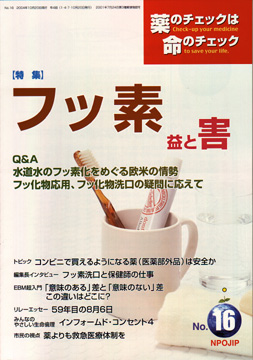

No.16 特集 フッ素 2005年7月 第2刷発行
 小学校での歯の検診で、「ああ〜ん」と大口を開けて虫歯のチェックをしてもらったのを覚えていますか？ 「要治療」となって歯医者さんへ行った時の、あの、キュイーンと虫歯をほじくる（？）器械の音が苦手という人は多いようですね。
フッ素は虫歯予防に役立つとされ、健康日本21（注1）の目標に基づいて、2003年1月、厚生労働省（厚労省）が保育園や幼稚園、小学校などでの集団フッ素洗口を推奨したことから、学校など施設単位でフッ素洗口が推進されようとしています。
そこで本誌では、フッ素の益と害を2回に分けて徹底的に検討します。益はどの程度？ 害はどんなものがどの程度にあるのか？ いっしょに考えてみましょう。
結論からいうと、フッ素の虫歯予防効果はほとんどなく、フッ素が安全だという最大の根拠となった動物実験や大規模な疫学調査が、実は逆に危険を示すデータだということがわかったのです（この疫学調査の解説は次号で）。
読み終わる頃には、フッ素が危険なものであることをみなさんに納得していただけるのではないかと思います。
（注1）健康日本21とは、「21世紀における国民健康づくり運動」の略称。国（厚生省、現：厚労省）は、生活習慣病及びその原因となる生活習慣等の課題について、9分野（栄養・食生活、身体活動と運動、休養・こころの健康づくり、たばこ、アルコール、歯の健康。糖尿病、循環器病、がん）毎の2010年度を目処として「基本方針」「現状と目標」「対策」などを設定し、2000年3月、「健康日本21」の推進を各地方自治体へ通知した。
もくじ
■メッセージ
高橋晄正氏 （元東京大学医学部講師、日本フッ素研究会会長）
特集
■フッ素の益と害 Q＆A
■水道水のフッ素化をめぐる欧米の情勢
■フッ化物応用、フッ化物洗口の疑問に応えて
連載
■編集長インタビュー
楠 恭子さんに聞く フッ素洗口と保健師の仕事
■ぷちいのちジャーナル
横行するカルテ改ざん
■山郷から 申年の梅
■みんなのやさしい生命倫理 １６
インフォームド・コンセント（４） インフォームド・コンセントの歴史２
■映画の中のクスリ（9） ニトログリセリン
■リレーエッセイ 59年目の8月6日
■市民の視点
薬よりも救急医療体制を
■EBM超入門（5）
「意味のある」差と「意味のない」差 この違いはどこに？
■行ってきました 平成16年度健康・学校環境衛生講習会
■美味礼賛 百年の孤独（大麦焼酎、宮崎県）
■コーヒー無礼区
トピック
■１ コンビニで買えるようになる薬（医薬部外品）は安全か
■２ アンケート調査のカラクリ
プロトピック軟膏の発がん性を患者に説明するとどうなったか
■投稿
食物アレルギーと過敏性腸症候群
■質問箱
Q:フルタイド 副腎機能の状態を知るには？
■読者の声
・「ボランティアしたいですが」
・「まずは養生してから医者へ」
・「なぜオーストラリアのガイドラインなの？」
■書評
・『DES薬害―被害と救済の検証』
・『幸せをよぶコミュニケーション サップ式からエスペール法へ』
提言
■NPOJIPの提言
製薬企業は、全面的情報公開を
■NPOJIP関連書籍紹介/TIP出版物
■NPOJIP書籍申込み用紙
■バックナンバー常備店
■編集後記
トピックより
コンビニで買えるようになる薬（医薬部外品）は安全か
浜六郎
コンビニなど一般店でも薬（「医薬部外品」（注1）に移行したもの）が買えるようになるということで、昨年（2003年）末に話題になっていましたが、今年8月からいよいよ販売されています。今回医薬部外品への移行が決まったものが、果たして、「安全上問題がないもの」かどうかをみてみましょう。
「不適切」なものが「安全に化ける」？
実は、7年前の1997年12月にも厚生省（当時）で同じような検討がなされて、99年に相当数が医薬部外品に移行しました。今回「安全上問題がない」とされたものは、原則としてすべて、前回は、「移行不適切」と判断されていました。前回に「不適切」とされたものが、今回はなぜ「安全」なのでしょうか（くわしくはTIP誌2004年1月号）
（注1）医薬品には、医師の処方箋があれば購入できる「医療用医薬品」と、処方箋なしでも薬局で購入できる「医薬部外品」がある。かぜ薬や鎮痛剤などは「一般用医薬品」、歯みがき剤などは「医薬部外品」
（以下、引用省略）
詳しくは本誌で。